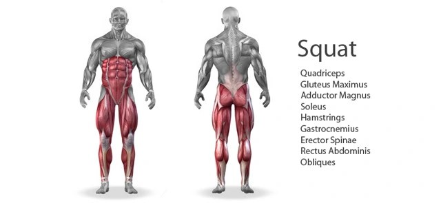
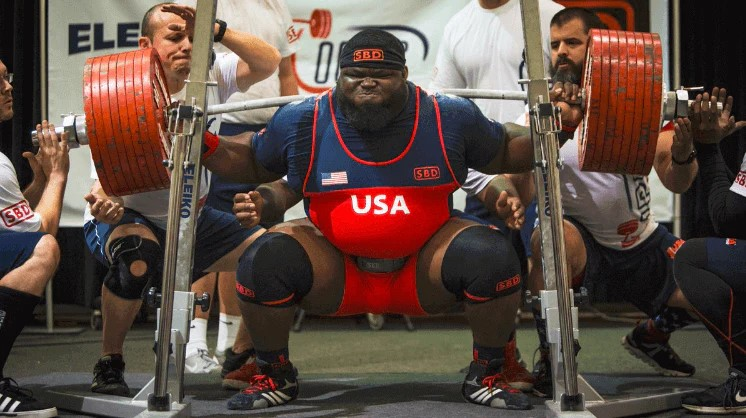

Guggolás
A guggolás egy olyan többdimenziós gyakorlat, mely számos izmot mozgósít és fejleszt egyszerre. Ahogy leereszkedünk, a comb elülső részén található négyfejű combizmaink (quadriceps) aktiválódnak, míg a felső test súlya a farizmokra (hamstrings) nehezedik. Ebben a folyamatban a csípő izmai is részt vesznek, segítve a test stabilizálásában és a mozgás folyamatosságában. A guggolás tehát nem csupán a lábizmokra korlátozódik; a farizmok és a csípő izmai is szorosan összefonódnak, hogy együttműködjenek a gyakorlat során. Ez nemcsak erőnlétünket növeli, de javítja a testtartást, és hozzájárul a core izomzat erősítéséhez is. A farizmok és a csípő izmai nem csupán a mozgásban vesznek részt, hanem a stabilitás fenntartásában is, amely elengedhetetlen a sérülések megelőzése és a hatékony teljesítmény érdekében. Tehát, amikor guggolunk, nemcsak lábaink dolgoznak, hanem a mozgás egész testünkön keresztül terjed, bevonva és erősítve a különböző izomcsoportokat. Ez a komplexitás teszi a guggolást olyan sokoldalú és hatékony gyakorlattá, amely szinte az összes izomcsoportot megmozgatja, hozzájárulva ezzel a teljes test erősítéséhez és fejlesztéséhez.
Ray Williams elképesztő teljesítménye nem más, mint 490 kilogrammos guggolás, amivel világrekordot állított fel. Ez a hihetetlen súly nemcsak a súlyemelő történelem egyik kiemelkedő pillanata, hanem egy olyan eredmény, amely a sportvilágban méltán kelti fel a figyelmet. A 490 kilogrammos guggolás egyedülálló erőnlét és technikai tudás mellett születethetett meg, és Ray Williams ezzel a teljesítménnyel cementálta helyét a guggolás elitjében. A sportvilágban kevés olyan pillanat van, amikor egy versenyző ilyen kimagasló súlyt emel guggolásban, és Williams ezzel a teljesítménnyel beírta magát a súlyemelés történelmébe.
